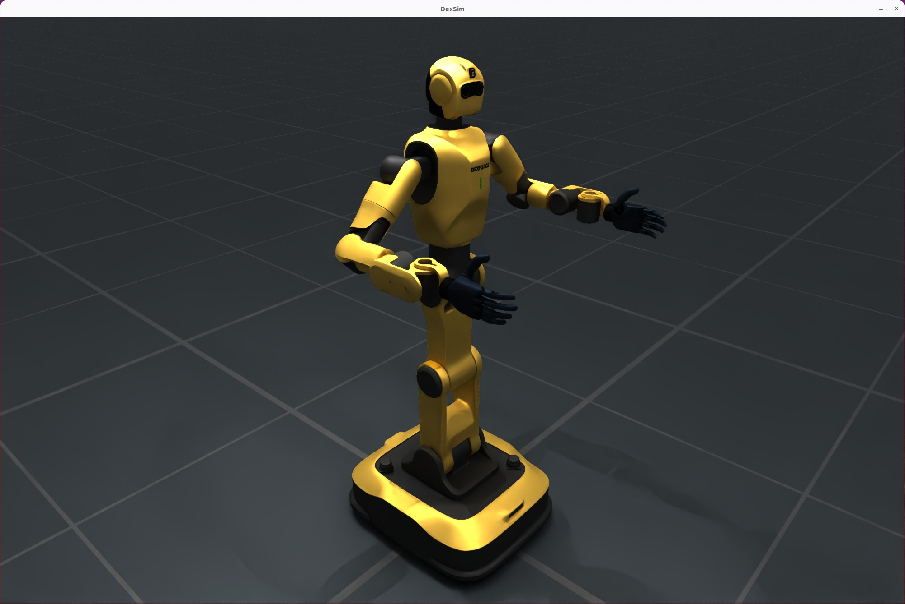
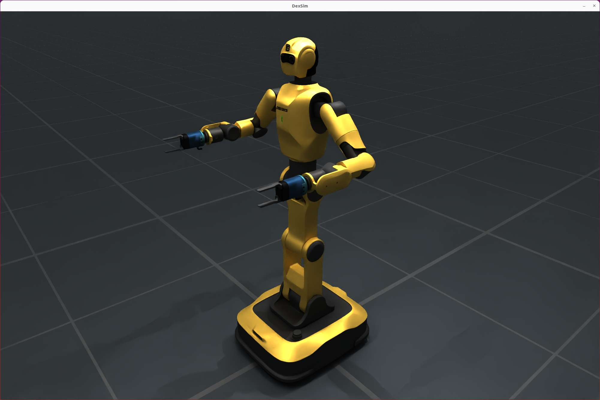

Dexforce W1#
Dexforce W1 is a versatile robot developed by DexForce Technology Co., Ltd., supporting both industrial and anthropomorphic arm types. It is suitable for various simulation and real-world application scenarios.


Key Features#
Supports multiple arm types (industrial, anthropomorphic)
Configurable left/right hand brand and version
Flexible URDF assembly and simulation configuration
Compatible with SimulationManager simulation environment
Method 1: Fine-grained configuration with build_dexforce_w1_cfg#
This method allows you to specify detailed parameters for each arm and hand. Recommended for advanced users who need full control over robot hardware options.
Parameters:
arm_kind: Arm type, e.g.,DexforceW1ArmKind.ANTHROPOMORPHICorDexforceW1ArmKind.INDUSTRIAL.hand_types: Dict specifying hand brand for each arm side (LEFT/RIGHT).hand_versions: Dict specifying hand version for each arm side.
hand_types = {
DexforceW1ArmSide.LEFT: DexforceW1HandBrand.BRAINCO_HAND,
DexforceW1ArmSide.RIGHT: DexforceW1HandBrand.BRAINCO_HAND,
}
hand_versions = {
DexforceW1ArmSide.LEFT: DexforceW1Version.V021,
DexforceW1ArmSide.RIGHT: DexforceW1Version.V021,
}
cfg = build_dexforce_w1_cfg(
arm_kind=DexforceW1ArmKind.ANTHROPOMORPHIC,
hand_types=hand_types,
hand_versions=hand_versions,
)
robot = sim.add_robot(cfg=cfg)
print("DexforceW1 robot added to the simulation.")
Method 2: Quick configuration with DexforceW1Cfg.from_dict#
This method allows fast setup using a dictionary, suitable for simple scenarios or when default options are sufficient. Recommended for rapid prototyping or when only basic parameters are needed.
Parameters:
uid: Unique robot identifier (string).version: Robot version, e.g.,v021.arm_kind: Arm type, e.g.,anthropomorphicorindustrial(string).
from embodichain.lab.sim.robots import DexforceW1Cfg
cfg = DexforceW1Cfg.from_dict(
{"uid": "dexforce_w1", "version": "v021", "arm_kind": "anthropomorphic"}
)
robot = sim.add_robot(cfg=cfg)
print("DexforceW1 robot added to the simulation.")
Arm Joint Design: Mirrored Configuration#
DexforceW1’s left and right arms are designed with mirrored joint configurations. This means the joint angles for the left and right arms are symmetric but opposite in sign for certain axes, making it easier to coordinate bimanual tasks and maintain natural robot postures.
Example: Setting Arm Joint Positions#
import numpy as np
# Set left arm joint positions (mirrored)
robot.set_qpos(qpos=[0, -np.pi/4, 0.0, -np.pi/2, -np.pi/4, 0.0, 0.0], joint_ids=robot.get_joint_ids("left_arm"))
# Set right arm joint positions (mirrored)
robot.set_qpos(qpos=[0, np.pi/4, 0.0, np.pi/2, np.pi/4, 0.0, 0.0], joint_ids=robot.get_joint_ids("right_arm"))
This mirrored design simplifies motion planning and ensures that both arms can perform coordinated or symmetric actions efficiently.
Configuration Method Selection#
Choose build_dexforce_w1_cfg for maximum flexibility and hardware customization. Use DexforceW1Cfg.from_dict for quick setup and prototyping. Both methods produce a configuration object (cfg) that can be passed to sim.add_robot(cfg=cfg) to add the robot to the simulation.
Note:
Ensure parameter types match the expected enums or strings.
For advanced simulation scenarios, prefer the fine-grained method.
For most demos or simple tasks, the quick method is sufficient.
Type Descriptions#
Type |
Options / Values |
Description |
|---|---|---|
|
|
Arm type |
|
|
Hand brand |
|
|
Release version |
|
|
Left/right hand identifier |